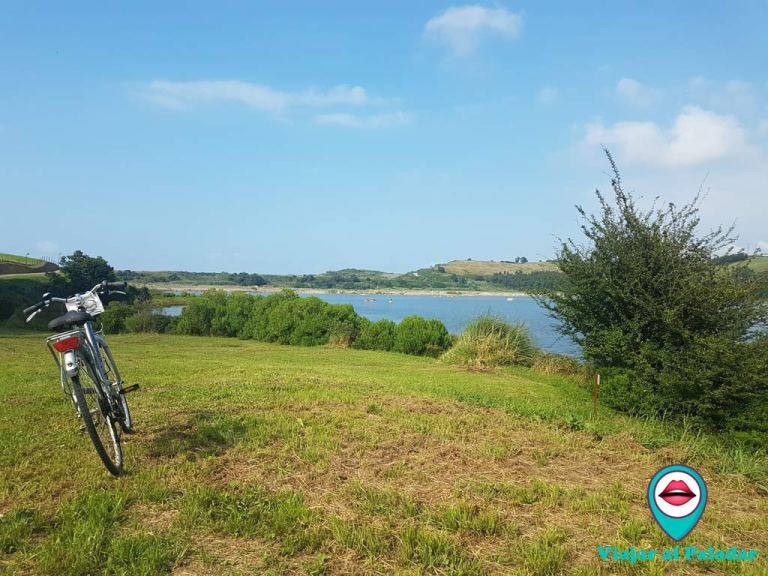

	
	<center>
	<table height="25%" border="3" width="100%" height="100%" border-color="red">
	
	<tr>
	<td width="100%" height="100%" colspan="3" style="background-color: yellow">
	<br/>

	<center> <h1> TORRELAVEGA </h1>
	</br> </center>
	<br/>
	</td>
	</tr>

	<tr>
	 <td>
		<p>Las Vías Verdes son antiguas vías del ferrocarril actualmente en desuso que se han rehabilitado y adaptado para ciclistas y peatones. La recuperación de estas vías permite recorrer itinerarioshistóricos, descubrir parajes de gran belleza y que están al alcance de todos, mayores, niños, personas con movilidad reducida. Un gran plan para disfrutar en familia! 
  La Vía Verde del Besaya recorre parte de la antigua vía del tren minero que transportaba el mineral desde la mina de Reocín hasta el cargadero de San Martín de Hinojedo. Esta vía transcurre a orillas de la ría de San Martin (Ría de Suances), el Rio Saja y el Rio Besaya.
Es una vía sencilla, con apenas desnivel (aunque nos encontraremos con algunos repechos), que va desde Suances hasta Los Corrales de Buelna, y viceversa ;), aproximadamente 20 km. 
		</p>
	 </td>
	 <td BACKGROUND="fondo.jpg">
	   <center width="100" height="200"><a href="lechera.html"> LA LECHERA </a></center> <br/>
	   <center width="100" height="200"><a href="verde.html"> LA VIA VERDE </a></center> <br/>
	   <center width="100" height="200"><a href="ayunta.html"> PLAZA DEL AYUNTAMIENTO  </a></center> <br/>
	   <center width="100" height="200"><a href="principal.html"> INICIO </a></center> <br/>
	 </td>
	 </tr>
	 </table>
	